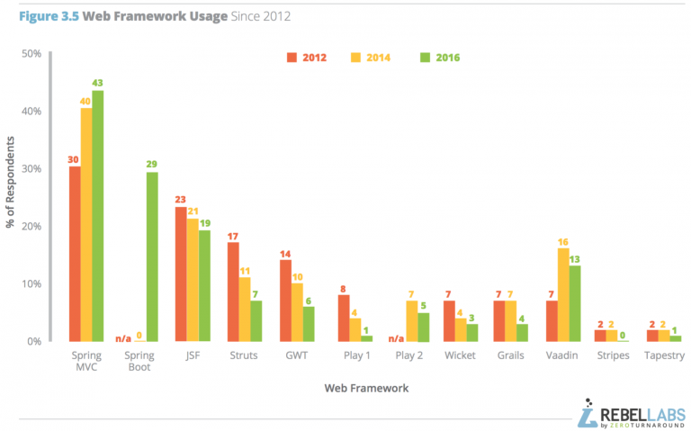

<JSF>
Short description
JavaServer Faces (JSF, or simply Faces) was created to ease the creation of graphical interfaces.
Inspired by the Swing component model and other GUI (graphical user interface) frameworks, JSF allows
developers to think in terms of components, events, backing beans, and their interactions, instead of requests, responses,
and markup language. Its goal is to make web development faster and easier by supporting user interface components
(such as text boxes, list boxes, tabbed panes, and data grids) in a rapid application development (RAD) approach.
JavaServer Faces (JSF) is a new standard Java framework for building Web applications. It simplifies development by providing
a component-centric approach to developing Java Web user interfaces. JavaServer Faces also appeals to a diverse audience of Java/Web developers.
"Corporate developers" and Web designers will find that JSF development can be as simple as dragging and dropping user interface (UI) components
onto a page, while "systems developers" will find that the rich and robust JSF API offers them unsurpassed power and programming flexibility.
JSF also ensures that applications are well designed with greater maintainability by integrating the well established Model-View-Controller (MVC)
design pattern into it's architecture. Finally, since JSF is a Java standard developed through Java Community Process (JCP), development tools vendors
are fully empowered to provide easy to use, visual, and productive develop environments for JavaServer Faces.
Technical features
MVC solution
Specifically, in JSF the mapping is as follows:
Model - The Services/DAOs plus the entities they produce and consume. The entry point to this is the backing bean,
but in Java EE (of which JSF is a part) these artifacts are typically implemented by EJB and JPA respectively.
View - The UI components and their composition into a full page. This is fully in the domain of JSF and implemented by JSF UIComponents and Facelets respectively.
Controller - The traffic cop that handles commands and incoming data from the user, routes this to the right parts and selects a view for display.
In JSF one doesn't write this controller, but it's already provided by the framework (it's the FacesServlet).

from: https://www.tutorialspoint.com/jsf/jsf_architecture.htm
Navigation
In JSF you can easily navigate to a page if you know its name. You just need to explicitly set the page’s name
either in a backing bean returned parameter method or in a JSF page. The FacesServlet, acting as a controller,
will do the rest: intercept the call, get the page by its name, bind the values to the components, and render the
page to the user. With explicit navigation you can choose between navigating straight to a page and doing some
processing before navigating.
For example:
When you just want to go from page to page by clicking a link or a button without doing any processing, you can
use the UI components <h:button>, <h:link> and <h:outputLink>.
<h:link value="Back to creating a new book" outcome="newBook.xhtml"/>
But sometimes this is not enough because you need to access a business tier or a database to retrieve or process
data. In this case, you would use <h:commandButton> and <h:commandLink> with their action attribute that allows you
to target backing bean methods, as opposed to targeting a page with <h:link> or <h:button>.
<h:commandButton value="Create a book" action="#{bookController.doCreateBook}">
Form handling
JSF Form component is a collection of fields along with the data and submit functionality to be sent to the model implementing the business scenario.
To use the form in your JSF page include the following namespace;
xmlns:h="http://java.sun.com/jsf/html"
Some of the important form tag attributes are:

Type conversion and Validation
JSF provides a standard conversion and validation mechanism
that can process user inputs to ensure data integrity. In this way, when you invoke business methods to process, you
can safely rely on valid data. Conversion and validation allow the developer to focus on business logic rather than
checking whether the input data are not null, fit a range of values, and so on.
Conversion takes place when data input by the end user has to be converted from a String to an object and vice
versa. It ensures that data are of the right type—for example, in converting a String to a java.util.Date, a String to
an Integer, or a price in dollars to euros. As for validation, it ensures data contain the expected content
(a date following the dd/MM/yyyy format, a float between 3.14 and 3.15, etc.).
Conversion and validation occur during different phases of the page life cycle (which you saw in the previous
chapter) as shown in Figure
In page lifecycle:

During the Apply request values phase in the Figure, the UI component value is converted to the targeted object
(e.g., from a String to a date) and then validated during the Process validation phase. It makes sense that conversion
and validation occur before component data are bound to the backing bean (which happens during the Update model
values phase). If any error is found, it will result in adding error messages and shortening the life cycle, so it goes
straight to Render response (and messages will be displayed on the user interface with <h:messages/>). During this
phase, the backing bean properties are converted back to a String to be displayed.
JSF has a set of standard converters and validators and allows you to easily create your own.
Server-side handling of
user interface events
When a user clicks a JSF button or link or changes any value in the text field, JSF UI component fires an event,
which will be handled by the application code. To handle such an event, an event handler is to be registered in the application code or managed bean.
When a UI component checks that a user event has occured, it creates an instance of the corresponding event class and
adds it to an event list. Then, Component fires the event, i.e., checks the list of listeners for that event and calls the event
notification method on each listener or handler.
JSF also provide system level event handlers, which can be used to perform some tasks when the application starts or is stopping.
Following are some important Event Handler in JSF 2.0:

Rendering
Rendering is used for Conditionally displaying JSF components:
<h:form rendered="#{some boolean condition}">
A renderer is responsible for displaying a component and translating user input into the component’s value.
Think of it as a translator between the client and the server: it decodes the user request to set values to the component,
and encodes the response to create a representation of a component that the client understands and can display.
Renderers are organized into render kits, which focus on a specific type of output. To ensure application
portability, JSF includes support for a standard render kit and associated renderers for HTML 4.01. JSF
implementations can then create their own render kit to generate Wireless Markup Language (WML), scalable vector
graphics (SVGs), and so on.
I18N and L10N
Internationalization and Localization are important features for a web based application. Often the term i18n and L10n is encountered in the context of
internationalization and localization. . The abbreviation is based on the fact that the rather lengthy word 'internationalization'
starts with an 'i' followed by 18 characters followed by an 'n'. L10n follow the same logic as i18n. An application that has been internationalized can be
localized for different regions without changing any code.
The overall effect of implementing localization, is that our application will conform dynamically to the language, number and time formats defined by
a particular locale.
Creating an internationalized application comes in two steps:
Internationalization: Implementing the features in your application to support multiple languages
Localization: Presenting text, graphic, date, currency etc specific to a region
JavaScript integration
JavaScript is a powerful way to create
dynamic web applications by writing functions that interact with the DOM of a page. W3C standardized DOM,
whereas the European Computer Manufacturers Association (ECMA) standardized JavaScript as the ECMAScript
specification. Any page written with these standards (XHTML, CSS, and JavaScript) should look and behave more or
less identically in any browser that adheres to these guidelines.
JavaScript function can be embedded in the page within a <script> tag (but could
also be externalized in a separate file)
The h:outputScript tag renders an HTML element of the type "script" with type "text/javascript".
This tag is used to add an external javascript file to JSF page.
for example:
<h:outputScript library = "js" name = "help.js" />
Previous versions of JSF offered no native Ajax solution, so third-party libraries had to be used to fill the gap.
Sometimes this increased the complexity of the code at the expense of performance. Since JSF 2.0, things are much
easier, as Ajax support has been specified and is built into any JSF implementation.
First of all, there is a specified JavaScript library (jsf.js) for performing Ajax interaction, which means you
don’t have to develop your own scripts or manipulate the XMLHttpRequest objects directly. Without developing any
JavaScript, you can use a set of standardized functions to send asynchronous requests and receive data. In order to
use this library in your pages, you need to add the jsf.js resource with the following line of code:
<h:outputScript name="jsf.js" library="javax.faces" target="head"/>
...
Documentation
Kind of documentation, quality, up-todate
...
Community activity
In the Figure below, we can see Spring’s dominance over the past four years increase as they monopolize the web framework market.
Pivotal can be very happy with their Spring Boot adoption rate and this sets them up nicely as the microservices market begins to grow.
JSF is slowly decreasing, although this might just be a result of reduced Java EE adoption overall. Struts, GWT, Play 1, Wicket,
Stripes and Tapestry struggle to stay popular, while Vaadin is one of the few frameworks that has shown resilience during the Spring domination.

JSF communities:
jsfCentral
JavaServer Faces.org
JSF tool kit
Future evolution
I found some discussion about the future of JSF in the internet:
Update March 6, 2018:
"Since I wrote the article, many things have changed. At the time, the future of JavaEE looked uncertain, to put it mildly.
I didn't express my thought verbatim in this article, but I had reason to believe the days of JavaEE as we knew it were counted.
Luckily, the community raised their voices loud enough to impress Oracle. Much of this is the result of what Reza Rahman and
the Java EE Guardian did. Reza even quit his job as a Java evangelist at Oracle to stand up for his dreams. I'm deeply impressed by this move,
and I'm glad his gamble paid out.
Be that as it may, in September 2017, JavaEE 7 was released, including JSF 2.3. In March 2018, there are still few application servers supporting JSF 2.3,
but I'm positive that's going to change soon. It's possible to use JSF 2.3 with a simple Tomcat (adding CDI). You can use Wildfly.
The next version of TomEE and IBM Websphere Liberty Profile are going to support JSF 2.3, and if I'm not mistaken, they're going to be published soon."
JSF as a community project (2018 edition)
"The 2016 turmoil had several consequences. First, everybody working at Oracle temporarily left the JSF train.
Some of these people have returned, some of them haven't. In the meantime, work on JSF 2.3 continued. But it has become a community project.
Among others, the OmniFaces guys - Bauke Scholz (aka BalusC) and Arjan Timms - stepped in to fill the vacuum. Currently,
I'd say there are enough active key players to ensure the future of JSF.
As for JavaEE itself - well, that's history. Oracle has abandoned it, but they didn't simply drop it. Instead,
they handed it over to the Eclipse foundation. So now we've got the successor of JavaEE 8 in its incubator phase. For legal reasons, it's also got a new name."
from Beyond Java
Your perception
...
Ease of use
Unlike JSP and Servlet, JSF seperate business logic and web presentation very well. So we can focus on business logic in backing bean
and the presentation in xhtml.
Ease of installation
The NetBeans IDE has provided long-standing support for JavaServer Faces. Starting with the release of JSF 2.0 and Java EE 6,
NetBeans IDE has provided support for JSF 2.0 and JSF 2.1.
Just select from the Framworks->library->JSF 2.2 and the JSF framework is ready to be used

Learning curve
We followed a book "Java-EE-7-Development-with-NetBeans-8"". The book introduce the JSF step by step with small examples
, which makes our learning curve rather smooth.
Practical information
Website
JSF Intro from Tutoriapoint
I18n and L10N Explaination in jsf
Download
Beginning Java EE 7